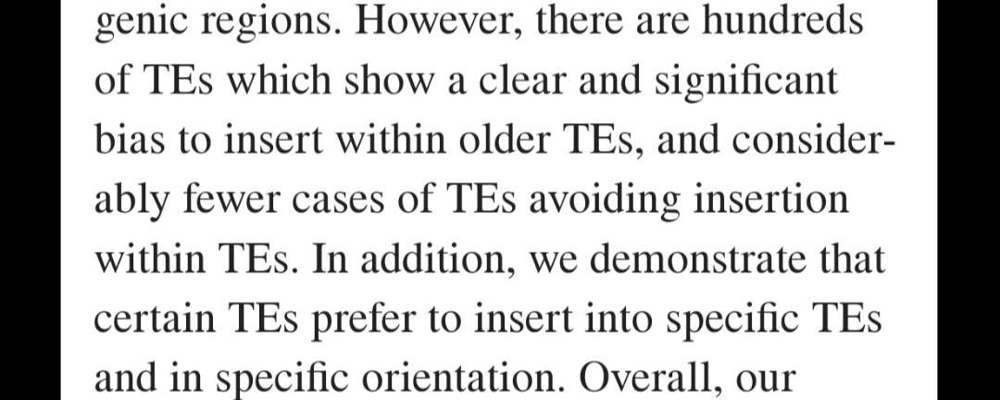
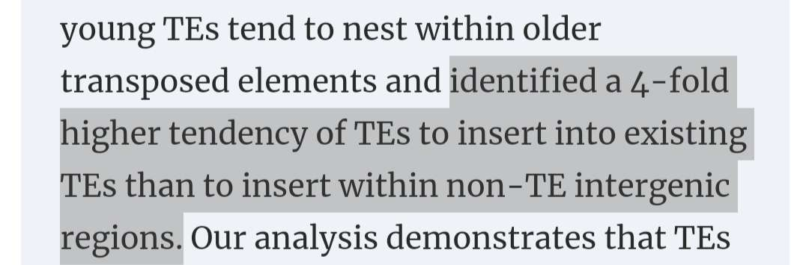
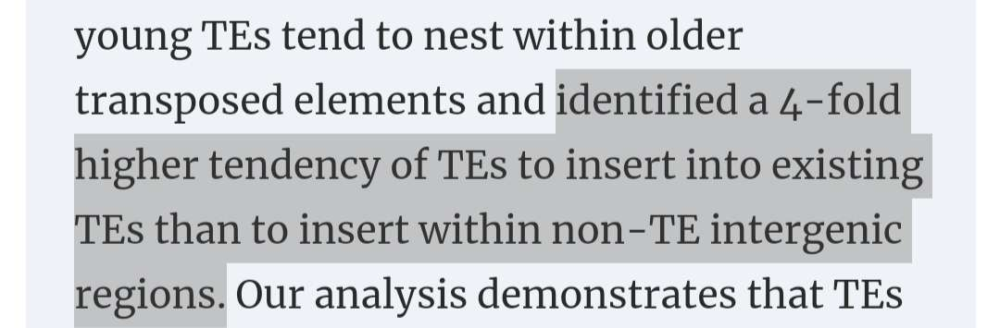
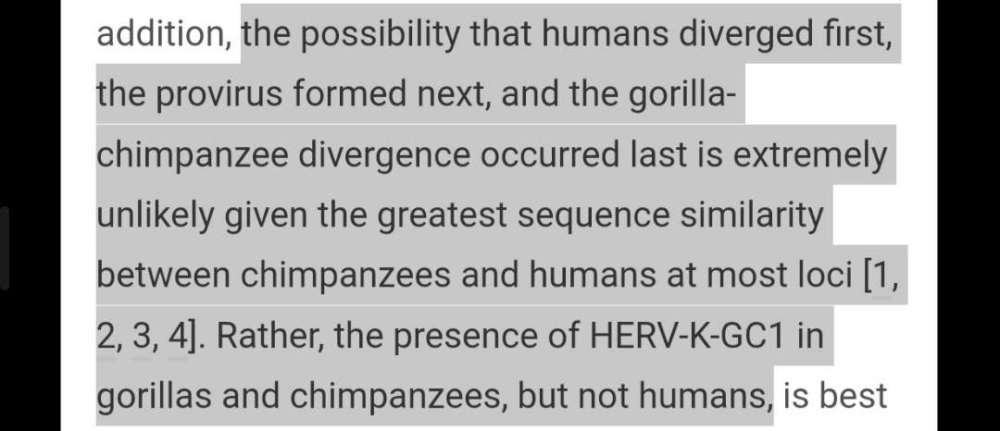
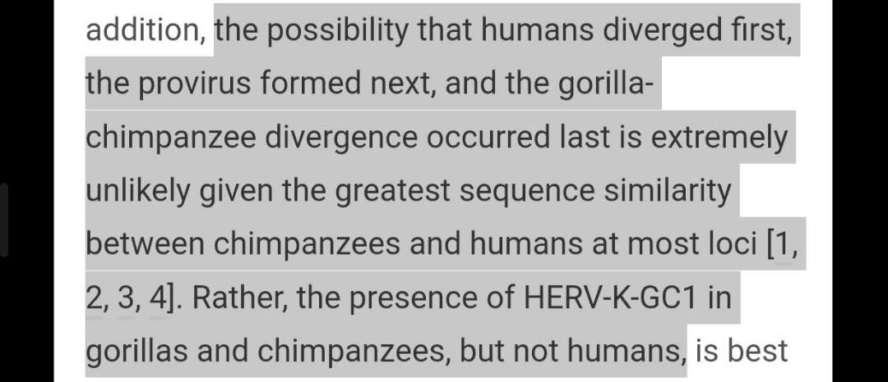

Endogenous retroviruses (ERV) are one of the most famous claims that evolutionists recently use us and evidence for evolution by proving common ancestry
The claim is that ERV in the process of insertion are random therefore when we have two ERV that are seen between two species with similar spots with no function this shows that they got this ERV from common ancestry and impossible to have it from infection that affected both of them and give them this ERV separately
Endogenous retroviruses (ERVs) comprise a significant portion of the genomes of many organisms, including humans. These sequences are remnants of ancient retroviral infections that have been passed down through generations. One of the primary arguments for common ancestry is the presence of shared ERVs among different species. However, several philosophical and scientific counterarguments refuted those claims
Non-random integration: ERVs are not randomly distributed throughout the genome which do undermine the case for common ancestry Research has shown that retroviruses preferentially integrate into specific genomic regions or sites ("hotspots") displaying particular characteristics. Consequently the presence of similar ERVs in different species could be attributed to these integration preferences {{being bias}} rather than shared ancestry
NOTE :-
We know that some evolutionists do say that ERV has some specificity and says that it is site specific but still not to deliver that given the ability to insert at the same spot but in the next papers we will show higher level of specificity on the level of nitrogen basis literally saying that after certain order of the nitrogen bases the ERV has four folds tendency to insert itself to this spot
https://www.ncbi.nlm.nih.gov/pmc/articles/PMC2836564/

https://academic.oup.com/nar/article/38/5/1515/3112509
 

 This diagram shows the distribution of TE elements including ERV insertion we can easily see that it has significant bias to sertain spots than others
2.ERVs could have been horizontally transferred: ERVs can be transmitted horizontally between different species, either through viral infections or other
mechanisms. Therefore, the presence of similar ERVs in different species may be due to horizontal transfer, rather than common ancestry one example that is
the introns wich is also transposable elements that has the same mechanisms like ERV the faced the same challenges and eventually has been refuted as evidence
for common ancestry
https://www.sciencedaily.com/releases/2009/12/091210111148.htm
Discrepancies in ERV distribution: The distribution of ERVs across various taxonomic groups does not always align with the expectations of common ancestry. Some closely related species share fewer ERVs than more distantly related species, which is inconsistent with the idea that ERVs are reliable markers of shared ancestry. This discrepancy could be explained by factors such as differential rates of ERV loss or gain, which challenge the validity of using ERVs to infer common ancestry
I will provide 2 examples of ERV between humans and it's closest relatives according to the theory.
The first example is HERV-K
https://www.cell.com/current-biology/fulltext/S0960-9822(01)00227-5

At this paper the author did refute all The hypothesis that he himself proposed to explain this problem and eventually admitted that no one knows.
Now for the second example the PTERV1
https://www.sciencedaily.com/releases/2005/03/050328174826.htm
Functional roles of ERVs: ERVs have been found to play important roles in the regulation of gene expression and the development of organisms. This suggests that the presence of similar ERVs in different species could be due to functional constraints, rather than common ancestry. For instance, the same ERV might have been independently retained in different species because it conferred an adaptive advantage under selective environmental pressure rather than being inherited from a common ancestor.
https://pubmed.ncbi.nlm.nih.gov/18535086/
This paper⬆️ shows that indulgences associated with gene regulation which means that some of them are responsible of switching your gene on and off and if you lost those international viruses that can can be lethal
https://retrovirology.biomedcentral.com/articles/10.1186/1742-4690-9-111
https://www.lunduniversity.lu.se/article/do-viruses-make-us-smarter
And now for the final example scientists discovered that there is an ERV that has the same function for humans chimpanzees gorillas but surprisingly they discovered that there is another different ERV that has the same function in mouse
This function is giving the ability for the embryo to adhesh to the uterus walls and Also in the placenta
This ERV called Syncytin-1/2
https://www.ncbi.nlm.nih.gov/pmc/articles/PMC4246240/
unfortunately I couldn't add some details that I really wanted to show you guys but I really didn't have time and collecting those quotes from all those papers to make it easier for you to get access to the informations you need in it .
But I will add more soon insha'Allah
For any more questions you can DMs me: Discord: STORM#6515 (if outdated go on about)
Wa asalam alikum.
This diagram shows the distribution of TE elements including ERV insertion we can easily see that it has significant bias to sertain spots than others
2.ERVs could have been horizontally transferred: ERVs can be transmitted horizontally between different species, either through viral infections or other
mechanisms. Therefore, the presence of similar ERVs in different species may be due to horizontal transfer, rather than common ancestry one example that is
the introns wich is also transposable elements that has the same mechanisms like ERV the faced the same challenges and eventually has been refuted as evidence
for common ancestry
https://www.sciencedaily.com/releases/2009/12/091210111148.htm
Discrepancies in ERV distribution: The distribution of ERVs across various taxonomic groups does not always align with the expectations of common ancestry. Some closely related species share fewer ERVs than more distantly related species, which is inconsistent with the idea that ERVs are reliable markers of shared ancestry. This discrepancy could be explained by factors such as differential rates of ERV loss or gain, which challenge the validity of using ERVs to infer common ancestry
I will provide 2 examples of ERV between humans and it's closest relatives according to the theory.
The first example is HERV-K
https://www.cell.com/current-biology/fulltext/S0960-9822(01)00227-5

At this paper the author did refute all The hypothesis that he himself proposed to explain this problem and eventually admitted that no one knows.
Now for the second example the PTERV1
https://www.sciencedaily.com/releases/2005/03/050328174826.htm
Functional roles of ERVs: ERVs have been found to play important roles in the regulation of gene expression and the development of organisms. This suggests that the presence of similar ERVs in different species could be due to functional constraints, rather than common ancestry. For instance, the same ERV might have been independently retained in different species because it conferred an adaptive advantage under selective environmental pressure rather than being inherited from a common ancestor.
https://pubmed.ncbi.nlm.nih.gov/18535086/
This paper⬆️ shows that indulgences associated with gene regulation which means that some of them are responsible of switching your gene on and off and if you lost those international viruses that can can be lethal
https://retrovirology.biomedcentral.com/articles/10.1186/1742-4690-9-111
https://www.lunduniversity.lu.se/article/do-viruses-make-us-smarter
And now for the final example scientists discovered that there is an ERV that has the same function for humans chimpanzees gorillas but surprisingly they discovered that there is another different ERV that has the same function in mouse
This function is giving the ability for the embryo to adhesh to the uterus walls and Also in the placenta
This ERV called Syncytin-1/2
https://www.ncbi.nlm.nih.gov/pmc/articles/PMC4246240/
unfortunately I couldn't add some details that I really wanted to show you guys but I really didn't have time and collecting those quotes from all those papers to make it easier for you to get access to the informations you need in it .
But I will add more soon insha'Allah
For any more questions you can DMs me: Discord: STORM#6515 (if outdated go on about)
Wa asalam alikum.